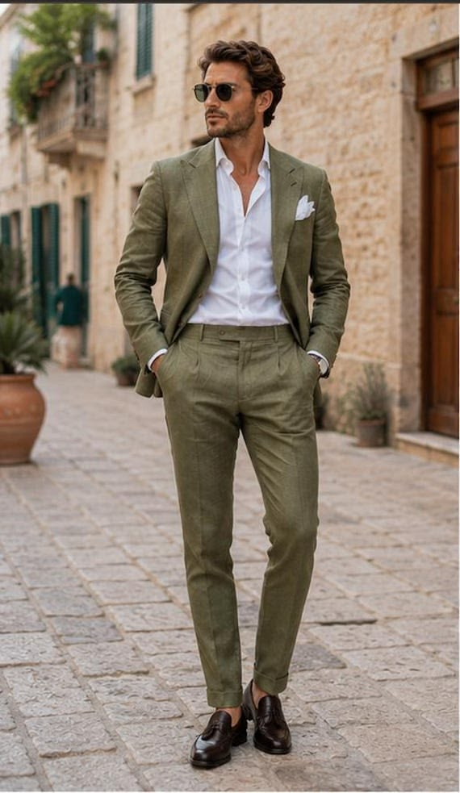
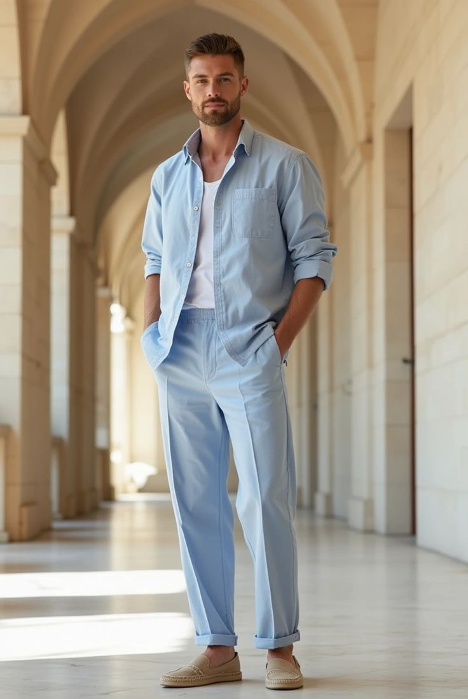
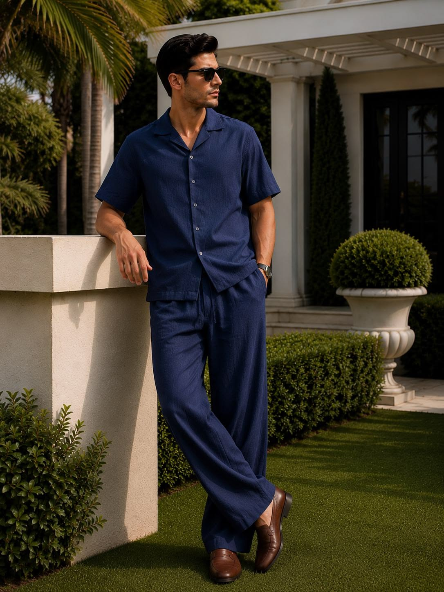
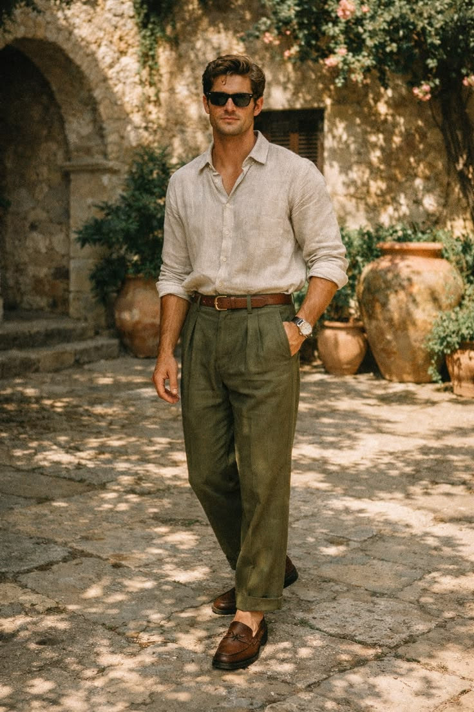

Dress CodeДресс-код
Our colour palette is intentionally open, so guests have flexibility in choosing what feels best for them.Наша цветовая палитра намеренно не ограничена, поэтому каждый может выбрать то, что ему по душе.
As the wedding takes place in Greece in June, we recommend breathable fabrics and lighter, more relaxed styles suited to warm weather.Поскольку свадьба пройдёт в Греции в июне, мы рекомендуем одежду из дышащих и натуральных материалов, подходящую для тёплой погоды.
Welcome Coffee & BrunchКофе и Завтрак
For brunch, we invite guests to dress in smart casual attire — think chic daytime wear and polished summer looks suited for a relaxed morning celebration.На утренний кофе и завтрак мы приглашаем в стиле smart casual — аккуратная и лёгкая летняя одежда для спокойного начала дня.








The WeddingСвадебная церемония
We invite our guests to dress in formal attire for the celebration.Мы приглашаем гостей на торжество в формальном дресс-коде.
Think chic evening wear — flowing dresses, elegant sets and refined tailoring.Изысканные вечерние образы — струящиеся платья, элегантные комплекты и утончённый крой.


Please avoid overly casual or simple summer dresses, as well as white and shades close to white.Пожалуйста, избегайте слишком повседневных или простых летних платьев, а также белого и близких к нему оттенков.


Think formal evening attire — well-tailored suits in lighter fabrics and refined styling suited for a warm summer celebration.Формальный вечерний образ — хорошо скроенные костюмы из лёгких тканей и утончённый стиль для тёплого летнего праздника.


Please avoid sneakers and non-formal shoes, shorts, jeans, or overly casual attire.Пожалуйста, избегайте кроссовок и неформальной обуви, шорт, джинсов и слишком повседневной одежды.